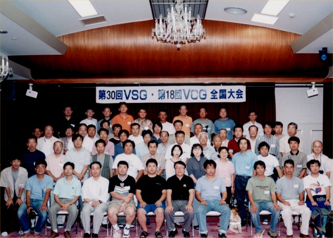
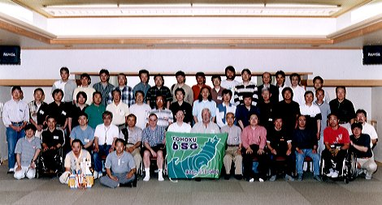
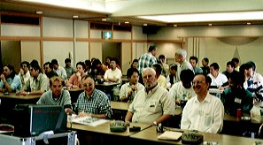
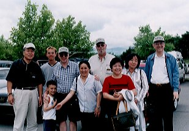

参加局 JE1BMJ JL1ABP JM1KNQ JA2BNV JA2BZY JE2WLD JR2HCB JA3MF JA3CEQ JA3JTG JF3GPS JI3BLY JR3HED JA4FM JA4EYJ JA4FHE JA4IOG JA4JAC JA4NOP JA4NUE JA4TOH JA4XRN JG4NDR JE4JFP JE4TOP JE4TRE JG4BLW JG4MLY JH4MFD JE4BTR JH4MGU JH4MHE JH4PFU JH4NIA JH4WXV JI4AAL JI4ONU JJ4WNP JK4DUJ JL4GTO JR4EUD JR4FLW JR4KBA JR4RYI JL4BLD JA5CMO JA5GJN JA5RCT JE5VYM JH5QOG JA6RJK JF6DEA JO6EDD JO6AKR (須田由美子・万柚子) JH7VEP JA9SSB JE9BHE JH9AII JH9CYY JR9NPS (市村美知栄) その他、当日参加者数名あり


【 第29回東北6mSSBグループミーティング参加者 】
JA1CJB JA5VBH JA7QVI JH7QLS JI7NAI JL7RFQ
JA1DWQ JA7AHK JA7WGB JH7UPW JI7NLL JL7XRT
JA1RJU JA7BZU JA7WSZ JH7VEP JI7WTK JH8FAJ/7
JR1LZK JA7JWF JH7BRY JR7AIW JJ7QWY (6/4)
JI1NJC JA7KDZ JH7HHK JE7CAI JK7IKU JE7HMZ
JJ1LGO JA7KHQ JH7JGM JE7EZN JK7OSL JJ7THL
JK1BEY JA7MIT JH7LVH JE7VLC JK7TKE 7J7ACX
JL1ABP JA7QMH JH7MQU JF7WTI JL7IWF 7J7ACZ
JP1MQZ JA7QPB JH7MSB JG7AOU JL7MYQ 7J7ADB


開催日 2000年9月2日(土)、3日(日) 2日前夜祭、3日ミーティング
場 所 鳥取県米子市高尾2377 Tel(0859) 27-2951
財団法人米子勤労総合福祉センター 米子ハイツ
会 費 前夜祭に参加して宿泊の場合 16,000円
ミーティングのみ参加の場合 3,000円
申込先 郵便為替
口座番号 0134-2-23455
口座名称 VSG・VCG全国大会。
締め切り 2000年7月30日
* 申込用紙に住所、氏名(ふりがなを付けて)、コールサイン、電話番号
* 申込者には領収書、アンケートハガキ等を郵送いたします。
大会会長 JE4TRE 二宮幸治
〒689-3203 鳥取県西伯郡名和町小竹 546
TEL 090-1011-1140
事 務 局 JL4GTO 神代和彦
〒680-0945 鳥取県鳥取市湖山町南 2-507
e-mail jl4gto@apionet.or.jp TEL 090-3179-6694
スタッフ JA4NOP、JA4NUE、JA4TKY、JH4MGU、JH4MHE、JR4FLW、JE4TOP
JE4TRE、JG4BLW、JL4GTO
サイクル23最盛期の今、各局の戦果は如何でしょうか？ 本年の6SG(東北6m SSBミーティング)を 下記の通り開催いたしますので、是非ご参加下さいますようご案内申し上げます。 記 日 時 2000年6月3日(土)、4日(日） 場 所 岩手県岩手郡西根町 いこいの村岩手 会 費 13,000円(当日受付ます) 催 し 3日 15:00=受付 18:00=開宴 4日 09:00=ミーティング開催 参加の申し込みは5月20日(必着)まで。 代表幹事 JH7BRY・津志田 祐一 岩手県岩手郡西根町惟子 16-57-152